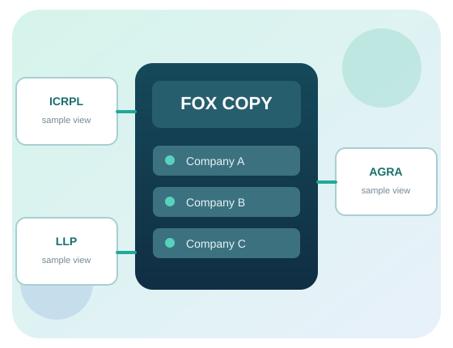

IW-FOX DESIGN PREVIEW
Workspace
All names and records below are invented examples. Switching a persona is a UI simulation, not authentication. No change leaves this browser.
This is an interactive design preview with invented records. The accepted Fox copy stays on UbuntuFOX and is not connected to this website.
Company names here are preview labels. Actual Fox account and entity mapping requires protected review.
